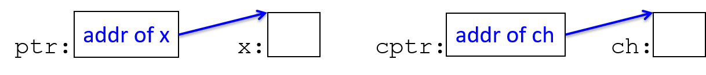
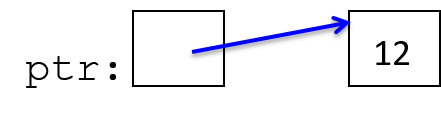
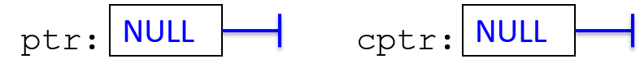
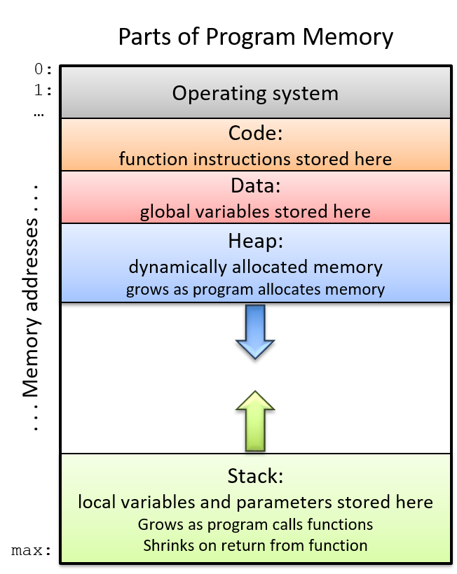
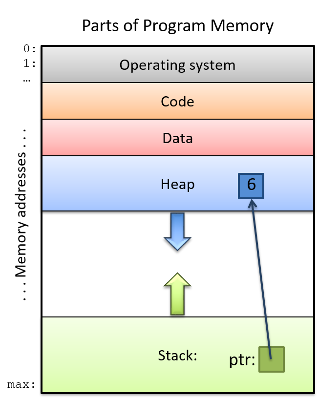

Programação Estruturada
UFABC
2026-10-16
Nesta aula vamos conectar três ideias:
Podemos imaginar a memória como um grande vetor de bytes.
Cada byte possui um endereço.
Uma variável ocupa um ou mais bytes consecutivos.
O operador & retorna o endereço de uma variável.
#include <stdio.h>
int main() {
int n = 507;
printf("n = %d\n", n);
printf("endereco = %p\n", &n);
return 0;
}O endereço não é endereço físico da memória RAM, mas um endereço dentro do espaço de memória do processo.
Medidas de segurança fazem com que endereços mudem entre diferentes execuções.
Um ponteiro é uma variável cujo valor é um endereço de memória.

ptr é um ponteiro para uma variável do tipo intcptr é um ponteiro para uma variável do tipo char
ptr é int * e o de cptr é char *ptr é o endereço de xcptr é o endereço de ch
Temos duas variáveis:
n, cujo valor é 12;ptr, cujo valor é o endereço de n.O ponteiro também tem um endereço próprio: &ptr.
O operador * também é usado para desreferenciar um ponteiro.
Sintaxe: *ptr significa:
acesse o valor armazenado no endereço contido em ptr.
ptr e n permitem acessar a mesma região de memória.
Qual o valor final de n?
Este código está errado:
ptr ainda não contém um endereço válido.
Desreferenciar um ponteiro inválido causa comportamento indefinido.
Quando um ponteiro não aponta para um objeto válido, podemos usar NULL.

Para desreferenciar, precisamos ter uma região válida de memória.
void muda_valor(int x) {
x = 10;
}
int main() {
int n = 5;
muda_valor(n);
printf("%d\n", n);
return 0;
}A função recebe uma cópia do valor de n.
Também podemos passar um endereço por valor.
A função recebe uma cópia do endereço de n.
Em C, continuamos passando tudo por valor.
Chamada:
Depois da função: x == 20 e y == 10.
scanfPara escrever em uma variável, o scanf precisa receber seu endereço.
Um return devolve apenas um valor.
Às vezes o tamanho necessário só é conhecido durante a execução.
Queremos reservar espaço para n inteiros.
Como já discutido, vamos evitar o uso de vetores locais de tamanho variável (VLAs).
Comportamento estranho dependendo do compilador, e técnica não muito geral.
Para criar um vetor com tamanho escolhido em execução, usaremos alocação dinâmica.
int *cria_numero() {
int n = 507;
return &n;
}
int main() {
int *ptr = cria_numero();
printf("%d\n", *ptr);
return 0;
}Qual a saída?
n deixa de existirn é uma variável local;Queremos uma região de memória que:
cria_numero;Para isso usamos alocação dinâmica.
malloc: reservando memória dinâmicamentemalloc reserva (se possível) um bloco de memória no heap e retorna o endereço do início do bloco.
Se não tiver memória disponível, malloc retorna NULL
Stack (pilha)
Heap


free: liberando a memóriaMemória alocada com malloc permanece reservada até ser liberada.
free(ptr) devolve o bloco ao sistema de gerenciamento de memória.
free, o bloco não é mais nossoDepois disso:
O ponteiro ainda contém um endereço, mas aquela memória não pertence mais ao programa.
free;free;NULL.Esses erros podem compilar normalmente e falhar apenas durante a execução.
free?Uma regra útil:
Toda alocação precisa ter um free correspondente.
Precisamos saber quem é responsável pelo bloco alocado.
Essa responsabilidade fica especialmente importante quando começarmos a retornar memória de funções.
Depois de alocar, podemos usar a notação usual de vetores:
int *vetor = malloc(n * sizeof(int));
if (vetor == NULL)
return 1;
for (int i = 0; i < n; i++)
vetor[i] = i * i;
free(vetor);Os colchetes continuam funcionando!
Erros de memória podem ser difíceis de enxergar no código.
Algumas ferramentas úteis:
&x obtém o endereço de x;*ptr acessa o objeto apontado por ptr;malloc cria objetos no heap;free encerra nosso uso daquele bloco.zera que receba o endereço de um int e altere seu valor para zero.